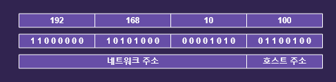
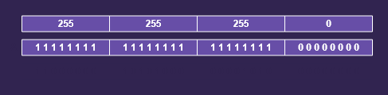
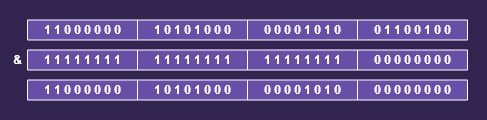

클라이언트/서버
클라이이언트/서버는
컴퓨터간의 관계를 역활로 구분하는 개념입니다.
서버(server)는
서비스를 제공하는 컴퓨터(service provider)이고,
클라이언트는(client)는
서비스를 사용하는 컴퓨터(service user)가 됩니다. (서버와 클라이언트를 모두 하나의 컴퓨터에 구성할 수도 있습니다.)
일반적으로 서버는 다수의 클라이언트에세 서비스를 제공하기 때문에 고사양의 하드웨어를 갖춘 컴퓨터이지만, 하드웨어의 사양으로 서버와 클라이언트를 구분하는 것이 아니기 때문에 하드웨어의 사양에 관계없이 서비스를
제공하는 소프트웨어가 실행되는 컴퓨터를 서버라고 합니다.
서비스(service)는
서버가 클라이언트로부터 요청받은 작업을 처리하여 그 결과를 제공하는 것을 뜻하며 서버가 제공하는 서비스의
종류에 따라 파일서버(file server), 메일서버(mail server), 어플리케이션 서버(application server)등이 있습니다.
서버에 접속하는 클라이언트의 수에 따라
하나의 서버가 여러 가지 서비스를 제공하기도 하고
하나의 서비스를 여러 대의 서버로 제공하기도 합니다.
서버가 서비스를 제공하기 위해서는 서버프로그램이 있어야 하고 클라이언트가 서비스를 제공받기 위해서는 서버프로그램과 연결할 수 있는 클라이언트 프로그램이 있어야 합니다.
네트워크를 구성할 때 전용서버를 두는 것을 서버기반 모델(server-based model)이라하 하고 별도의 전용서버없이 각 클라이언트가 서버역활을 하는 동시에 수행하는 것을 P2P모델(peer-to-peer)이라고
합니다.
서버기반 모델(server-based model)
- 안정적인 서비스의 제공이 가능
- 공유 데이터의 관리와 보안이 용이
- 서버구축 비용 및 관리비용 필요
P2P모델(peer-to-peer)
- 서버구축 및 운용비용 절감
- 자원의 활용을 극대화
- 자원의 관리가 어려움
- 보안이 취약
IP주소(IP address)
IP주소는
컴퓨터(호스트, host)를 구별하는데 사용되는 고유한 값으로 인터넷에 연결된 모든 컴퓨터는 IP주소를 갖습니다.
* IP주소는 4byte(32bit)의 정수로 구성되어 있으며 4개의 정수가 마침표를 구분자로 "a.b.c.d"와 같은 형식으로 표현됩니다. a, b, c, d는 부호없는 1byte 값, 즉 0~255사이의
정수입니다.
* IP주소는 다시 네트워크주소와 호스트주소로 나눌 수 있는데, 4byte(32bit)의 IP주소 중에서 네트워크주소와 호스트주소가 각각 몇 bit를 차지하는 지는 네트워크를 어떻게 구성하는지에 따라 달라집니다.
ipconfig.exe
Windows IP 구성
이더넷 어댑터 이더넷:
연결별 DNS 접미사. . . . :
IPv4 주소 . . . . . . . . . : 192.168.10.100
서브넷 마스크 . . . . . . . : 255.255.255.0
기본 게이트웨이 . . . . . . : 192.168.10.1IP주소
서브넷 마스크
IP주소와 서브넷 마스크를 비트연산자(&)로 연산하면 IP주소에서 네트워크 주소만을 뽑아낼 수 있습니다. 이처럼 이 두 호스트가 같은 네트워크 상에 존재하는지를 확인할 수 있습니다.
네트워크 주소
InetAddress
자바에서는 IP주소를 다루기 위한 클래스로
InetAddress를 제공하여 다음과 같은 메서드가 정의되어 있습니다.
|
byte[] getAddress()
: IP주소를 byte배열을 반환합니다. |
|
static InetAddress[] getA;;ByName(String host)
: 도메인명(host)에 지정된 모든 호스트의 IP주소를 배열에 담아 반환합니다. |
|
static InetAddress getByAddress(byte[] addr)
: byte배열을 통해 IP주소를 얻습니다. |
|
static InetAddress getByName(String host)
: 도메인명(host)을 통해 IP주소를 얻습니다. |
|
String getCanonicalHostName()
: FQDN(full qualified domain name)을 반환합니다. |
|
String getHostAddress()
: 호스트의 IP주소를 반환합니다. |
|
String getHostName()
: 호스트의 이름을 반환합니다. |
|
static InetAddress getLocalHost()
: 지역호스트의 IP주소를 반환합니다. |
|
boolean isMulticastAddress()
: IP주소가 멀티캐스트 주소인지 알려줍니다. |
|
boolean isLoopbackAddress()
: IP주소가 loopback 주소(127.0.0.1)인지 알려줍니다. |